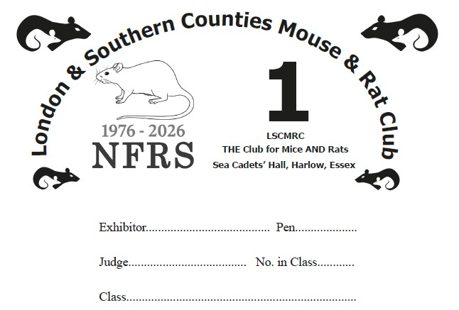
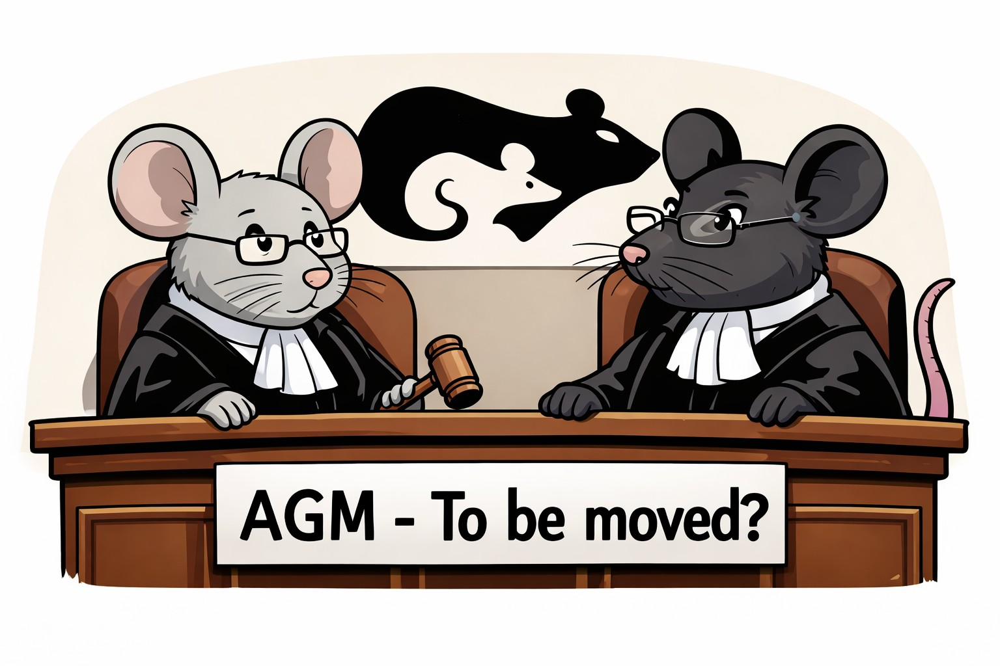

A Members’ Show for Mice and Rats will be held next Saturday 7th February at 11am at the Harlow Sea Cadet Hall, Bush Fair (rear of Tye Green Bowls Club), Tilegate Road, Harlow CM18 6LU Parking - council car park,front of the Bowls Club in marked spaces. Free to park on a Saturday BUT ticket must be obtained from machine and displayed. Permitted cars only next to the hall. Email Terry if you consider you have a special need.
Judge Mice: Robert Hogg
Rats: Varieties: Angela Corrie Pets: Lauren DeGrange
Entries Mice & Rats closing 9.30pm Wednesday Mice email TERRY tls080951@gmail.com Rats via the website at https://tinyurl.com/LSC-ENTRIES

Exhibition Mouse & Rat (EMR) Update is emailed in between editions of EMR to keep members and friends informed of club communications and items of wider interest. EMR will be unavoidably late and so essential show information is included in this Update. The PDF version of EMR will be sent out later in the week.
In this Update
February Show

[Standard information]
New prize cards celebrate rat Golden Jubilee 1976-2026
New prize cards celebrate the Golden Jubilee 1976-2026 of the NFRS which had its beginnings at the LSCMRC shows. EMR will be looking back for some old photographs during the year.
[LSCMRC admin]
AGM date may change
The Hon. Secretary has a meeting which clashes with our AGM. As it was arranged last September and overlooked it may be necessary to change our AGM to 28th February.
[LSCMRC admin]
Testing continues on new AI show entry form

Testing is continuing on the new AI show entry form. If it becomes operational in the next few days you will be notified, either in EMR or in an Update. It is understood that a new and exciting development has been made to the Chinese AI, DeepSeek, which will allegedly revolutionise AI (again). LSCMRC experiments with new developments as they emerge.
[ShowProg Development]
New standard to judge Quality?
Traditional points systems in livestock and small animal showing have historically prioritised participation and volume of entry. While successful at sustaining attendance and entry numbers, such systems are poorly suited to recognising sustained excellence, particularly in contexts where class structures differ substantially or where the rare varieties face structural disadvantages. The LSCMRC is studying the development, rationale, mathematical formulation, and evaluation of a post-judging Quality Assessment System which could be introduced in 2026, subject to committee agreement, plus a pilot assessment based on 2025 results. The system is designed to operate alongside existing points schemes, without altering judging practice, while providing a transparent, auditable, and computationally tractable measure of quality over time. The Club has given special attention to the divergent structural realities of mouse and rat showing, including the proliferation of straight (variety) classes in rats. Strengths, weaknesses, and avenues for future refinement are taken into account.
[ShowProg Development]